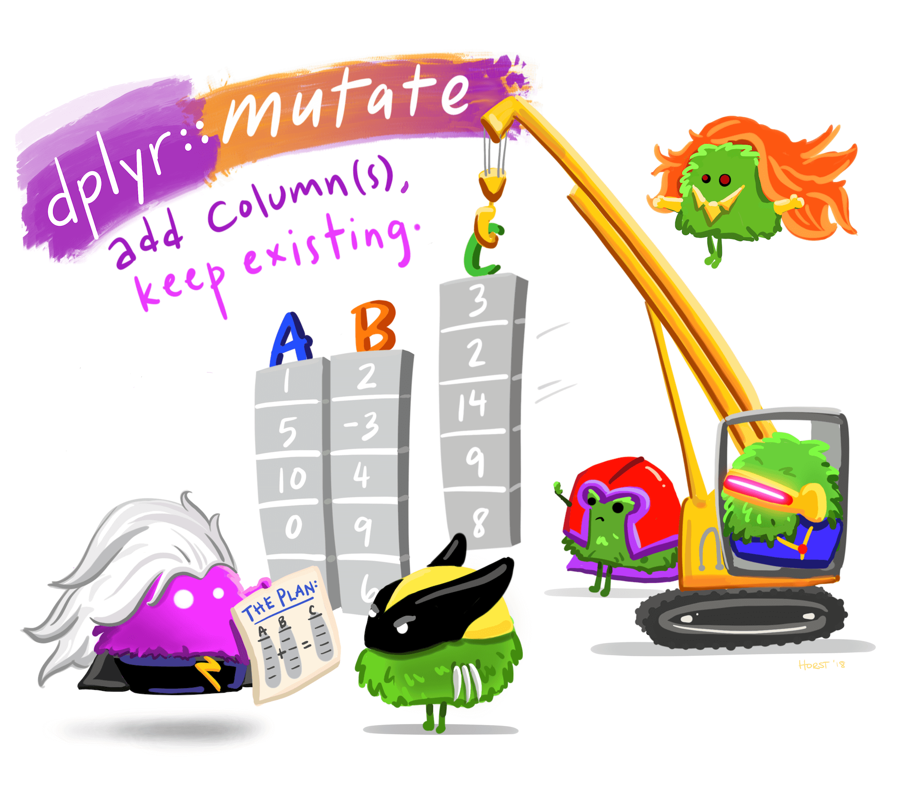

if(!require(pacman)) install.packages("pacman")
pacman::p_load(here,
janitor,
tidyverse)11 Mutating columns
11.1 Intro
You now know how to keep or drop columns and rows from your dataset. Today you will learn how to modify existing variables or create new ones, using the mutate() verb from {dplyr}. This is an essential step in most data analysis projects.
Let’s go!

mutate() verb.11.2 Learning objectives
You can use the
mutate()function from the{dplyr}package to create new variables or modify existing variables.You can create new numeric, character, factor, and boolean variables
11.3 Packages
This lesson will require the packages loaded below:
11.4 Datasets
In this lesson, we will again use the data from the COVID-19 serological survey conducted in Yaounde, Cameroon. Below, we import the dataset yaounde and create a smaller subset called yao. Note that this dataset is slightly different from the one used in the previous lesson.
yaounde <- read_csv(here::here('data/yaounde_data.csv'))
### a smaller subset of variables
yao <- yaounde %>% select(date_surveyed,
age,
weight_kg, height_cm,
symptoms, is_smoker)
yao# A tibble: 10 × 6
date_surveyed age weight_kg height_cm symptoms is_smoker
<date> <dbl> <dbl> <dbl> <chr> <chr>
1 2020-10-22 45 95 169 Muscle pain Non-smok…
2 2020-10-24 55 96 185 No symptoms Ex-smoker
3 2020-10-24 23 74 180 No symptoms Smoker
4 2020-10-22 20 70 164 Rhinitis--Sneezing--Anosmi… Non-smok…
5 2020-10-22 55 67 147 No symptoms Non-smok…
6 2020-10-25 17 65 162 Fever--Cough--Rhinitis--Na… Non-smok…
7 2020-10-25 13 65 150 Sneezing Non-smok…
8 2020-10-24 28 62 173 Headache Non-smok…
9 2020-10-24 30 73 170 Fever--Rhinitis--Anosmia o… Non-smok…
10 2020-10-24 13 56 153 No symptoms Non-smok…We will also use a dataset from a cross-sectional study that aimed to determine the prevalence of sarcopenia in the elderly population (>60 years) in in Karnataka, India. Sarcopenia is a condition that is common in elderly people and is characterized by progressive and generalized loss of skeletal muscle mass and strength. The data was obtained from Zenodo here, and the source publication can be found here.
Below, we import and view this dataset:
sarcopenia <- read_csv(here::here('data/sarcopenia_elderly.csv'))
sarcopenia# A tibble: 10 × 9
number age age_group sex_male_1_female_0 marital_status height_meters
<dbl> <dbl> <chr> <dbl> <chr> <dbl>
1 7 60.8 Sixties 0 married 1.57
2 8 72.3 Seventies 1 married 1.65
3 9 62.6 Sixties 0 married 1.59
4 12 72 Seventies 0 widow 1.47
5 13 60.1 Sixties 0 married 1.55
6 19 60.6 Sixties 0 married 1.42
7 45 60.1 Sixties 1 widower 1.68
8 46 60.2 Sixties 0 married 1.8
9 51 63 Sixties 0 married 1.6
10 56 60.4 Sixties 0 married 1.6
# ℹ 3 more variables: weight_kg <dbl>, grip_strength_kg <dbl>,
# skeletal_muscle_index <dbl>11.5 Introducing mutate()

mutate() function. (Drawing adapted from Allison Horst)We use dplyr::mutate() to create new variables or modify existing variables. The syntax is quite intuitive, and generally looks like df %>% mutate(new_column_name = what_it_contains).
Let’s see a quick example.
The yaounde dataset currently contains a column called height_cm, which shows the height, in centimeters, of survey respondents. Let’s create a data frame, yao_height, with just this column, for easy illustration:
yao_height <- yaounde %>% select(height_cm)
yao_height# A tibble: 5 × 1
height_cm
<dbl>
1 169
2 185
3 180
4 164
5 147What if you wanted to create a new variable, called height_meters where heights are converted to meters? You can use mutate() for this, with the argument height_meters = height_cm/100:
yao_height %>%
mutate(height_meters = height_cm/100)# A tibble: 5 × 2
height_cm height_meters
<dbl> <dbl>
1 169 1.69
2 185 1.85
3 180 1.8
4 164 1.64
5 147 1.47Great. The syntax is beautifully simple, isn’t it?
Now, imagine there was a small error in the equipment used to measure respondent heights, and all heights are 5cm too small. You therefore like to add 5cm to all heights in the dataset. To do this, rather than creating a new variable as you did before, you can modify the existing variable with mutate:
yao_height %>%
mutate(height_cm = height_cm + 5)# A tibble: 5 × 1
height_cm
<dbl>
1 174
2 190
3 185
4 169
5 152Again, very easy to do!
Practice
The sarcopenia data frame has a variable weight_kg, which contains respondents’ weights in kilograms. Create a new column, called weight_grams, with respondents’ weights in grams. Store your answer in the Q_weight_to_g object. (1 kg equals 1000 grams.)
## Complete the code with your answer:
Q_weight_to_g <-
sarcopenia %>%
_____________________Hopefully you now see that the mutate function is quite user-friendly. In theory, we could end the lesson here, because you now know how to use mutate() 😃. But of course, the devil will be in the details—the interesting thing is not mutate() itself but what goes inside the mutate() call.
The rest of the lesson will go through a few use cases for the mutate() verb. In the process, we’ll touch on several new functions you have not yet encountered.
11.6 Creating a Boolean variable
You can use mutate() to create a Boolean variable to categorize part of your population.
Below we create a Boolean variable, is_child which is either TRUE if the subject is a child or FALSE if the subject is an adult (first, we select just the age variable so it’s easy to see what is being done; you will likely not need this pre-selection for your own analyses).
yao %>%
select(age) %>%
mutate(is_child = age <= 18)# A tibble: 5 × 2
age is_child
<dbl> <lgl>
1 45 FALSE
2 55 FALSE
3 23 FALSE
4 20 FALSE
5 55 FALSE The code age <= 18 evaluates whether each age is less than or equal to 18. Ages that match that condition (ages 18 and under) are TRUE and those that fail the condition are FALSE.
Such a variable is useful to, for example, count the number of children in the dataset. The code below does this with the janitor::tabyl() function:
yao %>%
mutate(is_child = age <= 18) %>%
tabyl(is_child) is_child n percent
FALSE 662 0.6817714
TRUE 309 0.3182286You can observe that 31.8% (0.318…) of respondents in the dataset are children.
Let’s see one more example, since the concept of Boolean variables can be a bit confusing. The symptoms variable reports any respiratory symptoms experienced by the patient:
yao %>%
select(symptoms)# A tibble: 5 × 1
symptoms
<chr>
1 Muscle pain
2 No symptoms
3 No symptoms
4 Rhinitis--Sneezing--Anosmia or ageusia
5 No symptoms You could create a Boolean variable, called has_no_symptoms, that is set to TRUE if the respondent reported no symptoms:
yao %>%
select(symptoms) %>%
mutate(has_no_symptoms = symptoms == "No symptoms")# A tibble: 5 × 2
symptoms has_no_symptoms
<chr> <lgl>
1 Muscle pain FALSE
2 No symptoms TRUE
3 No symptoms TRUE
4 Rhinitis--Sneezing--Anosmia or ageusia FALSE
5 No symptoms TRUE Similarly, you could create a Boolean variable called has_any_symptoms that is set to TRUE if the respondent reported any symptoms. For this, you’d simply swap the symptoms == "No symptoms" code for symptoms != "No symptoms":
yao %>%
select(symptoms) %>%
mutate(has_any_symptoms = symptoms != "No symptoms")# A tibble: 5 × 2
symptoms has_any_symptoms
<chr> <lgl>
1 Muscle pain TRUE
2 No symptoms FALSE
3 No symptoms FALSE
4 Rhinitis--Sneezing--Anosmia or ageusia TRUE
5 No symptoms FALSE Still confused by the Boolean examples? That’s normal. Pause and play with the code above a little. Then try the practice question below
Practice
Women with a grip strength below 20kg are considered to have low grip strength. With a female subset of the sarcopenia data frame, add a variable called low_grip_strength that is TRUE for women with a grip strength < 20 kg and FALSE for other women.
## Complete the code with your answer:
Q_women_low_grip_strength <-
sarcopenia %>%
filter(sex_male_1_female_0 == 0) # first we filter the dataset to only women
# mutate code hereWhat percentage of women surveyed have a low grip strength according to the definition above? Enter your answer as a number without quotes (e.g. 43.3 or 12.2), to one decimal place.
Q_prop_women_low_grip_strength <- YOUR_ANSWER_HERE11.7 Creating a numeric variable based on a formula
Now, let’s look at an example of creating a numeric variable, the body mass index (BMI), which a commonly used health indicator. The formula for the body mass index can be written as:
\[
BMI = \frac{weight (kilograms)}{height (meters)^2}
\] You can use mutate() to calculate BMI in the yao dataset as follows:
yao %>%
select(weight_kg, height_cm) %>%
# first obtain the height in meters
mutate(height_meters = height_cm/100) %>%
# then use the BMI formula
mutate(bmi = weight_kg / (height_meters)^2)# A tibble: 5 × 4
weight_kg height_cm height_meters bmi
<dbl> <dbl> <dbl> <dbl>
1 95 169 1.69 33.3
2 96 185 1.85 28.0
3 74 180 1.8 22.8
4 70 164 1.64 26.0
5 67 147 1.47 31.0Let’s save the data frame with BMIs for later. We will use it in the next section.
yao_bmi <-
yao %>%
select(weight_kg, height_cm) %>%
# first obtain the height in meters
mutate(height_meters = height_cm/100) %>%
# then use the BMI formula
mutate(bmi = weight_kg / (height_meters)^2)
Practice
Appendicular muscle mass (ASM), a useful health indicator, is the sum of muscle mass in all 4 limbs. It can predicted with the following formula, called Lee’s equation:
\[ASM(kg)= (0.244 \times weight(kg)) + (7.8 \times height(m)) + (6.6 \times sex) - (0.098 \times age) - 4.5\]
The sex variable in the formula assumes that men are coded as 1 and women are coded as 0 (which is already the case for our sarcopenia dataset.) The - 4.5 at the end is a constant used for Asians.
Calculate the ASM value for all individuals in the sarcopenia dataset. This value should be in a new column called asm
## Complete the code with your answer:
Q_asm_calculation <-
sarcopenia #_____
#________________11.8 Changing a variable’s type
In your data analysis workflow, you often need to redefine variable types. You can do so with functions like as.integer(), as.factor(), as.character() and as.Date() within your mutate() call. Let’s see one example of this.
11.8.1 Integer: as.integer
as.integer() converts any numeric values to integers:
yao_bmi %>%
mutate(bmi_integer = as.integer(bmi))# A tibble: 5 × 5
weight_kg height_cm height_meters bmi bmi_integer
<dbl> <dbl> <dbl> <dbl> <int>
1 95 169 1.69 33.3 33
2 96 185 1.85 28.0 28
3 74 180 1.8 22.8 22
4 70 164 1.64 26.0 26
5 67 147 1.47 31.0 31Note that this truncates integers rather than rounding them up or down, as you might expect. For example the BMI 22.8 in the third row is truncated to 22. If you want rounded numbers, you can use the round function from base R
Pro Tip
Using as.integer() on a factor variable is a fast way of encoding strings into numbers. It can be essential to do so for some machine learning data processing.
yao_bmi %>%
mutate(bmi_integer = as.integer(bmi),
bmi_rounded = round(bmi)) # A tibble: 5 × 6
weight_kg height_cm height_meters bmi bmi_integer bmi_rounded
<dbl> <dbl> <dbl> <dbl> <int> <dbl>
1 95 169 1.69 33.3 33 33
2 96 185 1.85 28.0 28 28
3 74 180 1.8 22.8 22 23
4 70 164 1.64 26.0 26 26
5 67 147 1.47 31.0 31 31
Side Note
The base R round() function rounds “half down”. That is, the number 3.5, for example, is rounded down to 3 by round(). This is weird. Most people expect 3.5 to be rounded up to 4, not down to 3. So most of the time, you’ll actually want to use the round_half_up() function from janitor.
Challenge
In future lessons, you will discover how to manipulate dates and how to convert to a date type using as.Date().
Practice
Use as_integer() to convert the ages of respondents in the sarcopenia dataset to integers (truncating them in the process). This should go in a new column called age_integer
## Complete the code with your answer:
Q_age_integer <-
sarcopenia #_____
#________________11.9 Wrap up
As you can imagine, transforming data is an essential step in any data analysis workflow. It is often required to clean data and to prepare it for further statistical analysis or for making plots. And as you have seen, it is quite simple to transform data with dplyr’s mutate() function, although certain transformations are trickier to achieve than others.
Congrats on making it through.
But your data wrangling journey isn’t over yet! In our next lessons, we will learn how to create complex data summaries and how to create and work with data frame groups. Intrigued? See you in the next lesson.

select(), filter(), and mutate().
LAURE VANCAUWENBERGHE
A firm believer in science for good, striving to ally programming, health and education

ANDREE VALLE CAMPOS
Motivated by reproducible science and education

KENE DAVID NWOSU
Passionate about world improvement
References
Some material in this lesson was adapted from the following sources:
Horst, A. (2022). Dplyr-learnr. https://github.com/allisonhorst/dplyr-learnr (Original work published 2020)
Create, modify, and delete columns — Mutate. (n.d.). Retrieved 21 February 2022, from https://dplyr.tidyverse.org/reference/mutate.html
Apply a function (or functions) across multiple columns — Across. (n.d.). Retrieved 21 February 2022, from https://dplyr.tidyverse.org/reference/across.html
Artwork was adapted from:
- Horst, A. (2022). R & stats illustrations by Allison Horst. https://github.com/allisonhorst/stats-illustrations (Original work published 2018)
Other references:
- Lee, Robert C, ZiMian Wang, Moonseong Heo, Robert Ross, Ian Janssen, and Steven B Heymsfield. “Total-Body Skeletal Muscle Mass: Development and Cross-Validation of Anthropometric Prediction Models.” The American Journal of Clinical Nutrition 72, no. 3 (2000): 796–803. https://doi.org/10.1093/ajcn/72.3.796.
11.10 Solutions
.SOLUTION_Q_weight_to_g()
Q_weight_to_g <-
sarcopenia %>%
mutate(weight_grams = weight_kg*1000).SOLUTION_Q_sarcopenia_resp_id()
Q_sarcopenia_resp_id <-
sarcopenia %>%
mutate(respondent_id = 1:n()).SOLUTION_Q_women_low_grip_strength()
Q_women_low_grip_strength <-
sarcopenia %>%
filter(sex_male_1_female_0 == 0) %>%
mutate(low_grip_strength = grip_strength_kg < 20)
.SOLUTION_Q_prop_women_low_grip_strength()
Q_prop_women_low_grip_strength <-
sarcopenia %>%
filter(sex_male_1_female_0 == 0) %>%
mutate(low_grip_strength = grip_strength_kg < 20) %>%
tabyl(low_grip_strength) %>%
.[2,3] * 100
.SOLUTION_Q_asm_calculation()
Q_asm_calculation <-
sarcopenia %>%
mutate(asm = 0.244 * weight_kg + 7.8 * height_meters + 6.6 * sex_male_1_female_0 - 0.098 * age - 4.5)
.SOLUTION_Q_age_integer()
Q_age_integer <-
sarcopenia %>%
mutate(age_integer = as.integer(age))